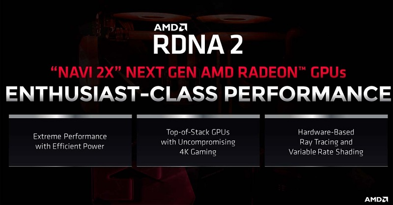

Nuevas gráficas Radeon RX 6000: la potencia de las nuevas consolas en tu ordenador
AMD está en una posición envidiable, ya que es la encargada del hardware de las nuevas Xbox Series X y
Playstation 5; y tal y como se esperaba,
las nuevas gráficas presentadas hoy se basan en la misma arquitectura, llamada RDNA2. La primera generación de
RDNA fue estrenada con la Radeon RX 5700,
pero aquella era una gráfica de gama media; muy buena, pero no a la altura de lo mejor de Nvidia.

Página principal